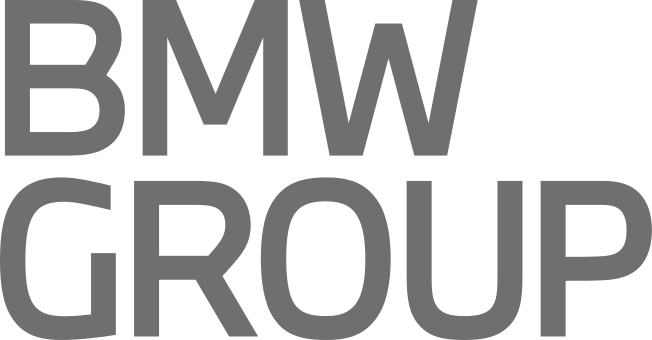

Jahre Erfahrung in Enterprise-IT und Softwareentwicklung
Ab sofort verfügbar · Remote · 100 %
Freiberuflicher Senior DevOps Engineer
Cloud-Plattformen,
die Teams voranbringen.
Senior DevOps Engineer & Developer
Ich entwickle sichere, skalierbare AWS-Plattformen und automatisiere den Weg von der Idee bis in die Produktion – hands-on, als Code und mit Blick auf den echten Betrieb.
10+
Jahre Enterprise
Hannover · Germany
Ausgewählte Enterprise-Projekte
Erfahrung in komplexen, regulierten und geschäftskritischen Umgebungen.

Projektreferenzen aus externer Tätigkeit. Die Markennennung stellt keine aktuelle Partnerschaft oder Empfehlung dar.
01 / PROFILE
Engineering mit Betreiberperspektive
Entwicklung trifft
Platform Engineering.
Seit 2012 entwickle ich Software- und Plattformlösungen in komplexen Enterprise-Umgebungen. Mein Fokus: Systeme, die nicht nur auf dem Architekturdiagramm funktionieren, sondern im Alltag zuverlässig Wert liefern.
Ich verbinde Softwareentwicklung mit Platform Engineering und DevOps. Infrastruktur wird reproduzierbarer Code, Observability ein Produktbestandteil und Security zur Designentscheidung. Dabei arbeite ich direkt mit Entwicklerteams, Stakeholdern und Betrieb zusammen.
Hands-on
Security by Design
Developer Enablement
Cost Awareness
Cloud-Kosten in einer AWS-Plattform nachhaltig reduziert
namhafte Großunternehmen als Projektreferenzen
02 / EXPERTISE
Von Foundation bis Feedback Loop
Plattformen als Produkt.
Automatisierung als Standard.
Ich übernehme Verantwortung über den gesamten Lebenszyklus – vom Account- und Netzwerkdesign über Delivery und Runtime bis zu Monitoring und Enablement.
Cloud & Platform Engineering
AWS-Landing-Zones, EKS/ECS-Plattformen, sichere Identitäten und skalierbare Runtime-Strukturen für produktive Teams.
- AWS · EKS · ECS
- IAM · OIDC · VPC
- Well-Architected
Infrastructure as Code
Nachvollziehbare Infrastruktur, wiederverwendbare Module und automatisierte Governance statt manueller Cloud-Konfiguration.
- Terraform
- AWS CDK · TypeScript
- Helm · Flux · ArgoCD
Delivery & Observability
Stabile Delivery-Pipelines und verwertbare Telemetrie, damit Fehler früher sichtbar und Releases berechenbarer werden.
- GitLab CI/CD · Jenkins
- Grafana · Prometheus
- Datadog · CloudWatch
Developer Enablement
Standards, Self-Service und pragmatisches Coaching, die Teams autonomer machen und Plattformen in der Organisation verankern.
- DevOps Practices
- Security Champion
- Cost Optimization
Technisches Toolkit
Bewährte Technologien, passend zum Kontext eingesetzt.
CloudAWSEKSECSLambdaRDSS3
Code & IaCTerraformTypeScriptAWS CDKJavaPython
DeliveryGitLab CI/CDJenkinsDockerHelmFlux
Data & OpsKafka / MSKGrafanaPrometheusOpenSearchDatadog
QUALIFICATIONS
Fundiertes Engineering.
Fundiertes Engineering.
Kontinuierlich weitergedacht.
Business Information Technology (B.Sc.)
Southampton Solent University · UK
AWS Trainings & Zertifikate
Technical Essentials · Systems Operations · Developing · Architecting · Advanced Architecting
ITIL Foundation
IT Service Management
Deutsch & Englisch
Deutsch Muttersprache · Englisch professionell
03 / PROJECTS
Ausgewählte Projekterfahrung
Komplexität ordnen.
Wirkung hinterlassen.
Enterprise-Projekte zwischen Softwareentwicklung, Cloud-Migration, Plattformbetrieb und technischer Führung.
DevOps Engineer / Developer
AWS-Account-Migration, Kafka/MSK-Integration und zentrales Monitoring
Kafka/MSK-Connectoren in Java modernisiert, Partner integriert, zentrale Observability aufgebaut und den AWS-Account-Aufbau inklusive IaC-Refactoring umgesetzt.
DevOps Engineer / Developer
Betrieb und Weiterentwicklung einer zentralen AWS-Cloud-Plattform
AWS-Infrastruktur mit CDK und TypeScript aufgebaut, ECS-Services zwischen Accounts migriert sowie Monitoring und Jenkins-Pipelines weiterentwickelt und stabilisiert.
DevOps Engineer / Developer · Security Champion · Kostenverantwortlicher
Erstes AWS-Migrationsprojekt und zentrale DevOps-Strukturen
Produktive Cloud-Infrastruktur und Standards als Grundlage für Folgeprojekte geschaffen. EKS-Plattformen betrieben, Teams enabled, Security Reviews begleitet und Cloud-Kosten um rund 25 % reduziert.
~25 %Kostenreduktion
Product Owner Automation
Aufbau einer neuen Automic-Automatisierungslandschaft
Produktverantwortung, technische Leitung und Lead-Architektur für eine neue UC4-Landschaft sowie Einführung von Kanban und Stakeholdersteuerung.
External Developer
Monitoring-Software für Automatisierungsprozesse
Monitoring-Lösung für Automic-Prozesse mit Java, JavaScript und Shell-Skripten entwickelt und in bestehende Systemlandschaften integriert.
Software Developer & Team Lead
Open-Source Cloudplattform und Synchronisationsservice
Ein Entwicklerteam geleitet und den zentralen Synchronisationsservice einer Cloudplattform in C++ mitentwickelt.
04 / REFERENCES
Empfehlungen & Nachweise
Erfahrung ist gut.
Vertrauen ist besser.
Hier finden Auftraggeber künftig persönliche Empfehlungsschreiben und Projektnachweise direkt als PDF.
Bereit für deine PDFs: Empfehlungsschreiben lassen sich später mit wenigen Dateiangaben ergänzen – inklusive Vorschau und Download.
05 / CONTACT
Bereit für das nächste Projekt
Lassen Sie uns über Ihre
Plattform sprechen.
Schicken Sie mir Ihre Projektbeschreibung direkt per E-Mail – oder rufen Sie mich für einen ersten Austausch an.
Ab sofort verfügbarRemote · Vollzeit · Vor Ort nach Absprache